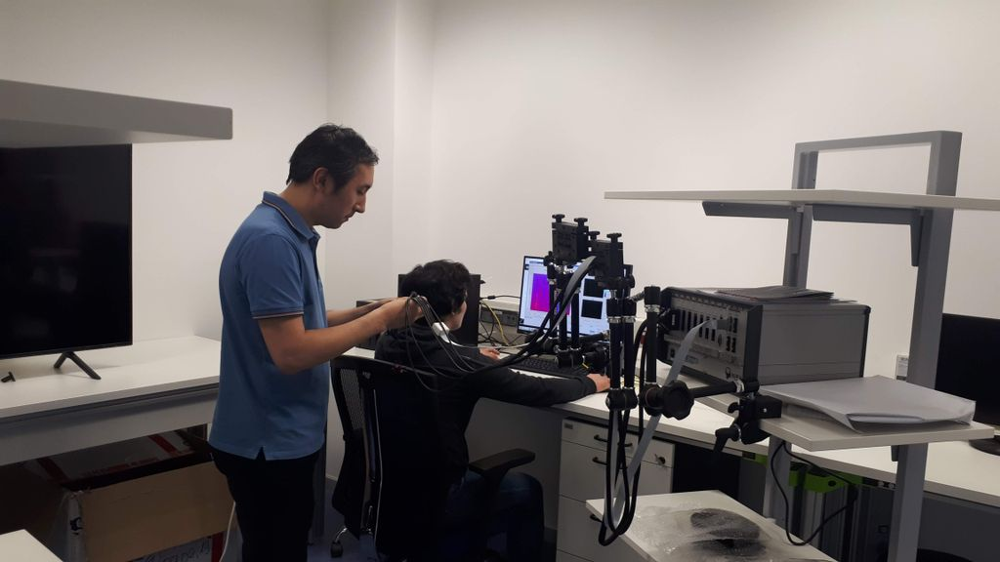

2017
← All researchDesign and Evaluation of Action Observation and Motor Imagery based BCIs using NIRS Minimizing inter-subject variability in FNIRS-based brain-computer interfaces via multiple-kernel support vector learning Classification of frontal cortex hemodynamic response during cognitive tasks using wavelet transforms and machine learning algorithm fNIRS motion artifact correction for overground walking using entropy-based unbalanced optode decision and wavelet regression neural network
fNIRS & Hemodynamic Decoding
Measuring and classifying hemodynamic responses during cognitive and motor tasks.
A sustained line of research uses near-infrared spectroscopy to study brain responses during action observation, motor imagery, and cognitive tasks. It also addresses inter-subject variability and motion artifacts in fNIRS recordings.

Research questions & methods
- Action observation and motor imagery paradigms
- Kernel methods and ensemble learning for hemodynamic signals
- Motion artifact characterization and correction
Selected publications
2013
2012
2017